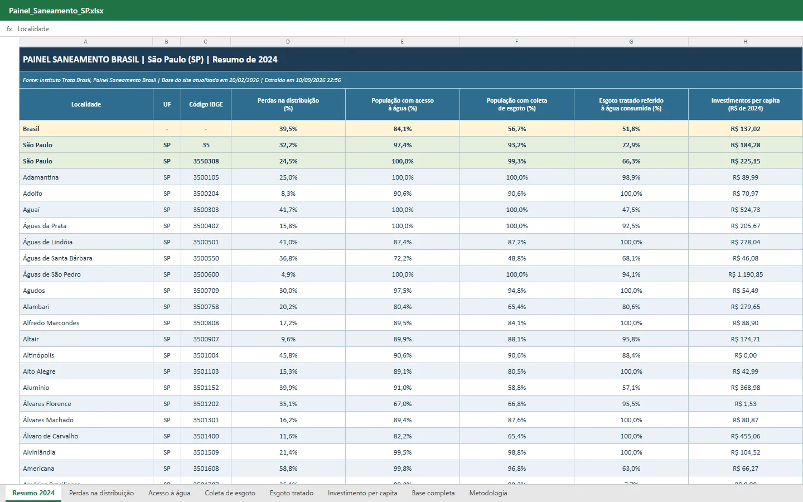
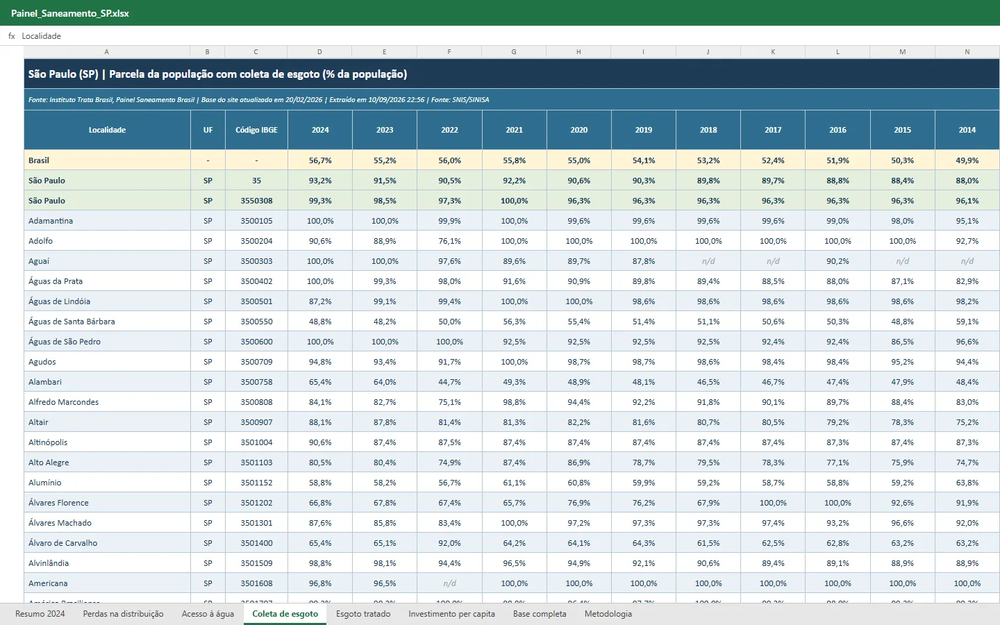

PortfólioTerritório e infraestrutura
Saneamento por município
Coleta dos indicadores do Painel Saneamento Brasil para o país, os estados e todos os municípios, em todos os anos disponíveis. Feito para o CONFEA.
- Instituição
- CONFEA
- Fonte
- Painel Saneamento Brasil (Instituto Trata Brasil), com dados do SNIS
- Período
- 2010 a 2024
- Saída
- Um Excel por UF e um CSV único
Telas
Planilha gerada pela coleta, reproduzida em HTML com os dados públicos do arquivo.




Fluxo da coleta
Cada localidade coletada vai para um cache. Uma execução interrompida retoma do ponto em que parou.
Indicadores
- Acesso à águaPercentual da população atendida.
- Coleta de esgotoPercentual da população com coleta.
- Esgoto tratadoPercentual do esgoto tratado em relação à água consumida.
- Perdas na distribuiçãoPercentual da água perdida.
- InvestimentoInvestimento por habitante, em reais de 2024.
Brasil, 2010 e 2024
na coleta de esgoto: 45,4% para 56,7% da população
no esgoto tratado: 36,2% para 51,8%
no acesso à água: 81,0% para 84,1%
da água perdida na distribuição em 2024 (39,0% em 2010)
Coleta de esgoto por UF
Parcela da população com coleta de esgoto, 2024
Fonte: Painel Saneamento Brasil, com dados do SNIS/SINISA. Média do Brasil: 56,7%.
Conferências da execução final
localidades gravadas: Brasil, 27 UFs e 5.570 municípios
municípios com séries idênticas, marcados para revisão
grafias divergentes entre IBGE e site, mantidas pelo código
município sem página no site, registrado no log
Processamento
A coleta lê duas páginas por localidade e compara o valor do ano mais recente. Se os valores divergem, a localidade sai do arquivo e o motivo vai para o log. Um erro em um município não interrompe a execução.